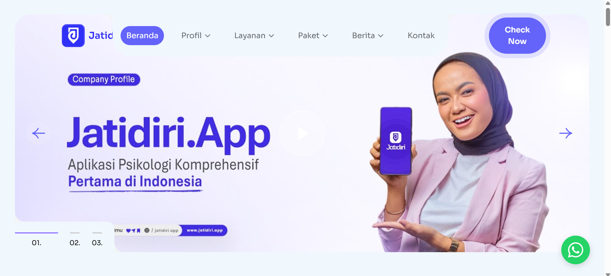
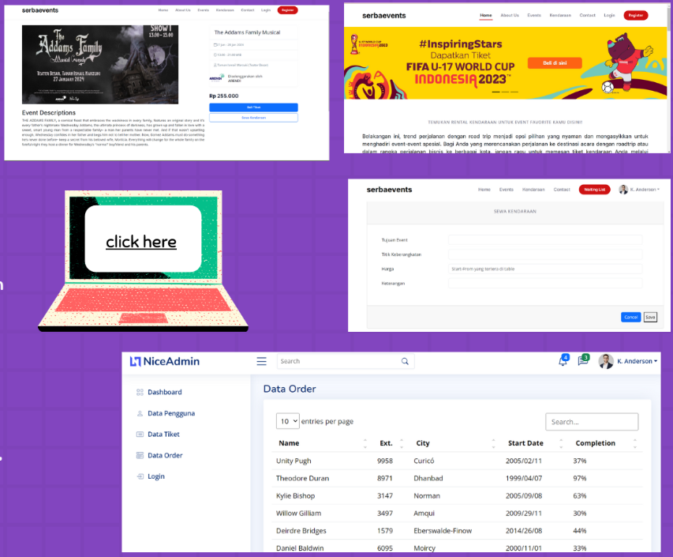
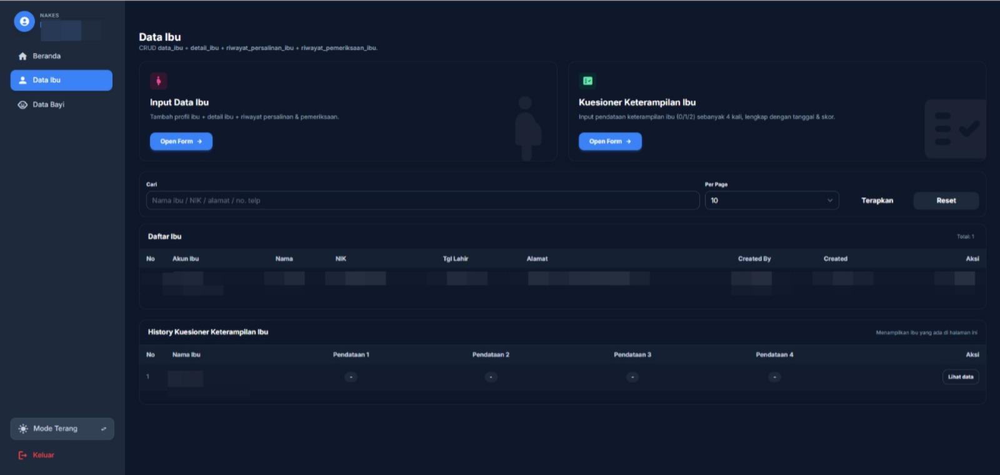

Halo
Saya Zay (Nizar Abdul Kholiq)
saya berminat
Tentang sayaFresh graduate D4 Teknik Informatika dengan pengalaman dalam pengembangan aplikasi berbasis web dan backend system, termasuk implementasi REST API, pengelolaan basis data, serta optimasi performa aplikasi. Terlibat dalam berbagai proyek seperti sistem ticketing, sistem pemesanan berbasis web, serta pengembangan sistem tes psikologi (RMIB) berbasis Laravel. Memiliki pemahaman dalam penggunaan teknologi seperti PHP, Laravel, Golang, dan MongoDB, serta terbiasa bekerja dengan arsitektur berbasis cloud dan web service. Mampu bekerja secara individu maupun dalam tim, memiliki kemampuan adaptasi yang baik, serta berkomitmen dalam menghasilkan solusi yang efektif, efisien, dan scalable.
email : kholiqnnabdul@gmail.com
tempat tinggal : Purwakarta, Indonesia
Saya Lulusan D4 Teknik Informatika Universitas Logistik dan Bisnis Internasional.
Universitas Logistik dan Bisnis Internasional | ULBI

Mengembangkan sistem tes Rothwell-Miller Interest Blank (RMIB) berbasis web yang dilengkapi dengan logika psikologi dan mekanisme penilaian sesuai standar tim psikolog. Bertanggung jawab dalam perancangan database serta pembangunan REST API menggunakan Laravel.
Melakukan optimasi performa sistem melalui perbaikan query (ORM & raw SQL) sehingga respons API menjadi lebih cepat, stabil, dan konsisten. Selain itu, mengembangkan dashboard CMS untuk pengelolaan data serta menyusun dokumentasi sistem secara lengkap.

Proyek pengembangan website ticketing event di Indonesia yang dikerjakan secara tim dengan fokus pada skalabilitas dan keamanan sistem.
Mengembangkan backend API menggunakan Golang dan MongoDB untuk pengelolaan data (CRUD & filtering), serta mengimplementasikan autentikasi PASETO v4 untuk meningkatkan keamanan akses pengguna.
Mengintegrasikan Google Cloud Functions untuk pemrosesan API yang scalable dan efisien, serta membangun antarmuka web responsif yang optimal di berbagai perangkat (mobile & desktop).

Mengembangkan aplikasi web untuk pendataan kesehatan ibu dan bayi dengan sistem multi-role (admin, tenaga kesehatan, dan ibu) menggunakan Laravel, MySQL, serta Blade Template dan Tailwind CSS.
Merancang dashboard terpisah untuk setiap role guna meningkatkan kejelasan alur penggunaan. Sistem mencakup pengelolaan data ibu dan bayi, pencatatan riwayat medis (kehamilan, persalinan, pemeriksaan), serta kuesioner keterampilan ibu dengan perhitungan skor otomatis.
Mengembangkan fitur monitoring bayi seperti biodata, hasil pemeriksaan, pertumbuhan, perkembangan (KPSP), serta data readmisi dan riwayat perawatan. Selain itu, mengimplementasikan fitur pencarian dan filter data.
Dari sisi teknis, dilakukan optimasi query dan struktur backend untuk memastikan aplikasi tetap responsif, stabil, dan efisien dalam pengolahan data.
2025
2023
2023
2023